Ask what becomes smaller
A recursive function needs a base case, a smaller problem, and a way to combine its result. Begin with the datatype rather than a loop you hope to translate. For a list, the immediate smaller structure is the tail. For a tree, it is each child. For an interval, it can be the remaining interval after advancing one endpoint.
let rec total_lengths words =
match words with
| [] -> 0
| word :: rest -> String.length word + total_lengths rest
For ["ml"; "rules"], the computation is 2 + (5 + 0) = 7. The recursive call answers the smaller question: how many characters occur in the remaining words? It does not need to know how many appeared before them.

View Mermaid source
flowchart TD
accTitle: Can I answer from the current constructor alone?
accDescr: Select the branch that matches the current case.
Q{"Can I answer from the current constructor<br/>alone?"}
Q -->|"Base case"| N0["Return the identity or direct result that<br/>the specification requires."]
Q -->|"Recursive case"| N1["Solve the immediate smaller pieces and<br/>combine their answers."]
Tail recursion stores pending work explicitly
The call in n + recursive_call is not in tail position, because addition remains to do after the call returns. An accumulator can carry this unfinished work.
let total_lengths_tail words =
let rec loop acc remaining =
match remaining with
| [] -> acc
| word :: rest -> loop (acc + String.length word) rest
in
loop 0 words
The invariant is: acc + the total length of remaining = the total length of the original input. That sentence explains both the initial accumulator and the final answer. An accumulator without an invariant often hides off-by-one or reversal errors.
Tail recursion changes stack usage, not automatically the amount of total work. Appending a growing prefix repeatedly may still produce quadratic time. For list construction, cons onto an accumulator and reverse once when order matters.
Higher-order functions describe a traversal pattern
| Pattern | What stays fixed | What varies |
|---|---|---|
List.map f xs |
Visit every element; preserve length and order | The element transformation |
List.filter p xs |
Traverse and retain selected elements | The predicate |
List.fold_left f z xs |
Move left to right with an accumulator | The update operation and initial value |
List.fold_right f xs z |
Replace each cons from the right | The combining operation and base value |
For subtraction, the direction matters:
let left = List.fold_left ( - ) 0 [8; 3; 1]
(* ((0 - 8) - 3) - 1 = -12 *)
let right = List.fold_right ( - ) [8; 3; 1] 0
(* 8 - (3 - (1 - 0)) = 6 *)
The fact that two folds agree for integer addition does not make them interchangeable for arbitrary operations.
A function can be the answer
let compose f g x = f (g x)
let plus_two n = n + 2
let triple n = n * 3
let transform = compose triple plus_two
transform 4 is 18: first add two, then multiply by three. Before evaluating higher-order code, write the type of each intermediate expression. This is especially helpful for HW1’s nested double applications. A higher-order function applied to itself may operate at a different type instance; count the resulting compositions rather than counting occurrences of the word double.
The homework connection
HW1 P1–P5 cover numeric and list recursion. P6–P8 add predicates and functions as arguments. P9–P14 combine recursive traversal with more interesting algebra. P15 adds a context to the traversal. The same progression leads directly to an interpreter helper eval environment expression.
Common trap: confusing mathematical identities with unspecified input policies. An empty conjunction naturally returns true, and an empty sum naturally returns 0. An empty list has no integer maximum. Decide based on the specification, and record an ambiguity when the specification gives no answer.
Check your understanding
Why is a recursive call on the same list dangerous even when a separate counter decreases?
Reveal the reasoning
It depends on the measure you claim decreases. A counter-based algorithm can terminate if the counter reaches a base case, but it may repeat the same element or fail the intended list traversal. State both the termination measure and the semantic invariant; termination alone does not establish correctness.
Read alongside: lecture 4, pp. 4–15 and 16–28, English book, §§2.2–2.3.